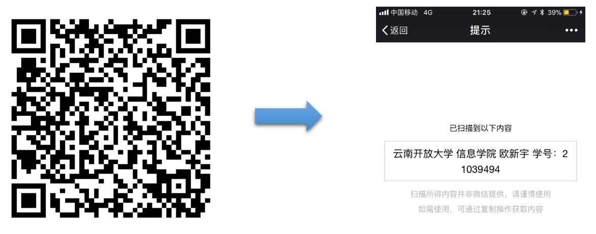

重要提示：
1. 提交方式：电子邮件（ouxinyu@hust.edu.cn 或 14777591@qq.com）
2. 每次作业的所有文件请压缩为一个文件，并命名为 “学号_姓名_作业名称.rar (或*.zip)”。
3. 将该压缩文件以标题 “学号_姓名_作业名称” 发送至上述指定邮箱。
4. 因文件名错误而导致无法正常收取或无法记录作业成绩，由提交者自行负责。
5. 作业成绩将作为平时成绩，计入本门课程的最终成绩，因此请认真对待。
| 序号 | 章节 | 作业描述 | 提交截止时间 |
|---|---|---|---|
| 1 | 第2.2节 二维码及其识别 |
任务名称：生成二维码 任务目的：简单了解，并学会生成二维码 任务步骤： 1. 打开任意一个二维码生成软件（在线生成器） 2. 输入需要生成的内容(学校名称 学院名称 学生姓名 学号)，可以做适当的修饰 3. 生成二维码，并进行保存 结果演示：  评价指标： 使用手机二维码扫描软件（例如，微信扫一扫），无法获得扫描结果，或扫描获得的内容与要求给定的内容不一致记为“0分”；扫描后获得的内容与给定的内容一致，记为“满分”。 |
2018年3月29日 |
| 2 | 第3.4节 红外技术 |
简答题： 1. 试说明热传感器与光子传感器的区别？ 2. 试说明焊接缺陷的红外无损检测的工作原理。 3. 简述红外成像仪的基本原理。 请将习题以.docx/.doc,.pdf文件发送到制定电子邮件（附件方式），注意命名规范“学号_姓名_作业名称”。 |
2018年5月3日 |
| 3 | 物联网通信技术 |
简答题： 常见的局域网通信技术有哪些？试比较其优缺点。 |
2018年6月7日 |
| 4 | 云计算和中间件 |
简答题： 什么是云计算？云计算的特点和服务形式分别是什么？ |
2018年6月14日 |